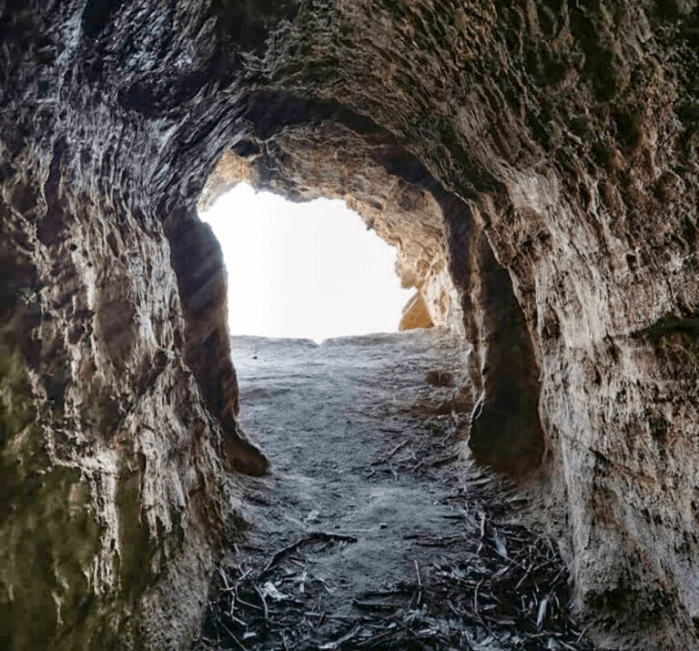
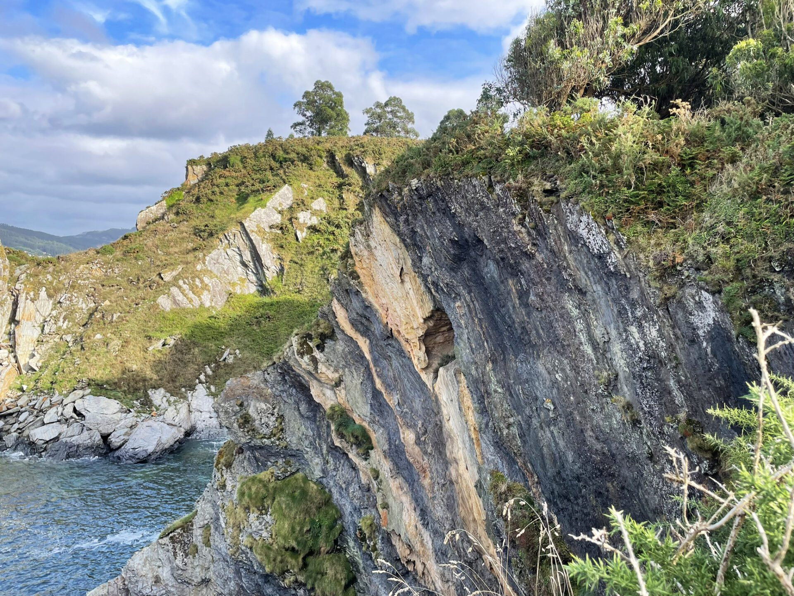

Lendas
A Cova da Doncela



Ficha rápida
- Lugar: Cova da Doncela (Covas, Viveiro - Lugo)
- Que é? Unha cova escavada nos cantís da Mariña que remata nun espectacular balcón natural sobre o mar.
- Lenda: Cada noite de San Xoán, unha moura —ou, segundo outras versións, unha doncela— sae da cova para bañarse no mar e peitear os seus cabelos cun peite de ouro.
- Dato curioso: Tamén se di que durante a posguerra a cova serviu de agocho para os maquis.
A lenda
Din que cada noite de San Xoán unha moza de cabelos louros sae dunha cova escondida entre os cantís de Viveiro. Baixa ata a praia, báñase no mar e, antes de que amence, senta nas rochas a peitear o seu cabelo cun peite de ouro. Cando sae o primeiro raio de sol, desaparece de novo no interior da cova.
Esta é a lenda da Cova da Doncela. A primeira vez que a lin gustoume, pero había unha cousa que me facía dubidar. Sinceramente, nunca acabei de imaxinar unha doncela vivindo nunha cova no medio dun cantil.
Despois descubrín que hai quen cre que a historia orixinal non falaba dunha doncela, senón dunha moura, e aí xa me empezou a cadrar todo moito máis. Ao final, as mouras sempre aparecen en covas, fontes ou castros, gardando tesouros e peiteándose con peites de ouro. Así a historia cadrábame moito máis.
E a verdade é que o propio lugar tamén axuda. Para chegar á cova hai que pasar por unha entrada tan estreita que os primeiros metros se fan a gatas. Cando por fin saes ao outro lado, atopas un balcón natural sobre o mar. Sinceramente, hai unha paisaxe fermosa desde alí e simplemente por iso animo a todo o mundo a visitar esta cova.
Como se iso non chegase, tamén hai quen conta que durante a posguerra a cova serviu de agocho para os maquis. Ao final, parece que leva séculos gardando historias.
Xa teño unha escusa para volver a Viveiro e esta vez vai tocar facelo por San Xoán. Quen sabe, igual ese ano hai sorte e aparece a moura. Ou a doncela.
Bibliografía
Fernández, L. (2023, 29 julio). La cueva con más magia que se esconde en plena ría de Viveiro. La Voz de Galicia.
https://www.lavozdegalicia.es/noticia/amarina/viveiro/2023/07/27/cueva-magia-esconde-plena-ria-viveiro/00031690475678731877732.htm
TurLeyendas. (2014, 27 diciembre). Leyenda de “A Cova da Doncela”.
https://turleyendas.wordpress.com/2014/12/25/leyenda-de-a-cova-da-doncela/